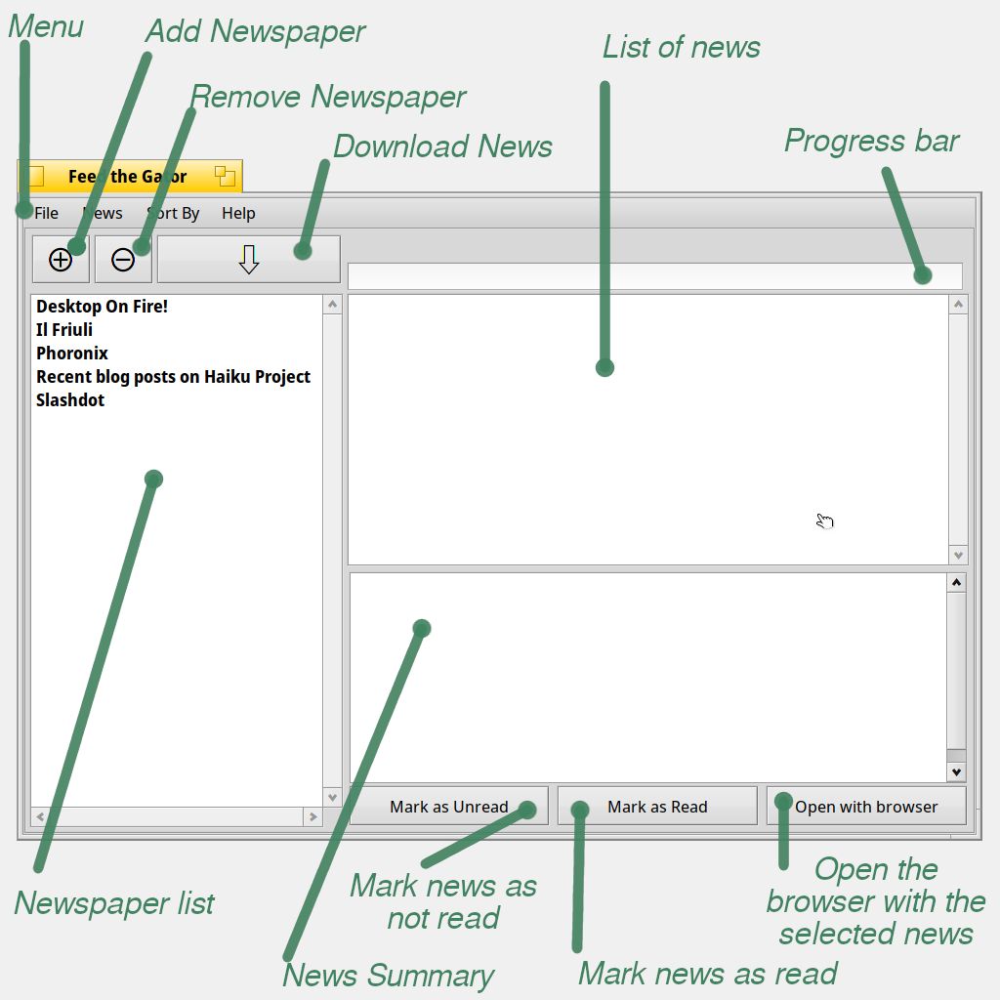

Topics
|
The interface
the program in his "beauty":

a brief description of available
commands:
- in the "menu" you can find 3 courtains: File, Sort by and
About; in "File" are placed the commands for adding a new newspaper,
remove a newspaper and relative (at your wish) news, download the
latest news and quit the application; in "Sort by" you can sort the
news; in "About" you can launch this help or read something about me
and the license of this program
- the + and - buttons have the same function of adding a new
newspaper and remove a newspaper found in the File menu
- once you added at least 1 newspaper the Get button allows
you to download the news like the
command in the File menu; by choosing a single newspaper (in the
newspaper list), you can download only its relative news (and not all
the newspapers)
- the Mark Read button makes the new news of selected
newspaper read, so they are not colored anymore red, a new news
downloaded is always marked as new until you select it or you mark all
the news of the newspaper read; you can mark all the news in the
database read if you select All in the list of the newspapers and you
press Mark Read button.
- by selecting a news in the news list, you mark it as a news
already read and a summary of the news (if available) is shown in the
text area below, if you want to read it in your web browser you have to
doubleclick the news in the news list.
- the field "Find" is used as filter for searching the news
that contains the word you write in
|